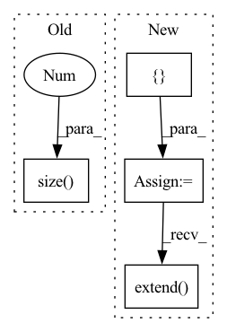

Pattern ID :23891
Before Change
// Memory querying and responding for visual features
dummy_memory_matrix = self.memory_matrix.unsqueeze(0).expand(att_feats.size(0), self.memory_matrix.size(0 ) , self.memory_matrix.size(1))
responses = self.cmn(att_feats, dummy_memory_matrix, dummy_memory_matrix)
max_num_protype = max((labels[:,-1]*3 + labels[:,:-1].sum(-1))) * self.num_prototypeAfter Change
cmn_masks = self.memory_matrix.new_zeros(query_matrix.shape[0], att_feats.size(1), max_num_protype)
for i in range(att_feats.size(0)):
cur_query_matrix = []
//print(labels[i])
for j in range(len(labels[i])):
if labels[i, j] == 1:
if j != len(labels[i])-1:
cur_query_matrix.extend(self.memory_matrix[j*self.num_prototype:(j+1)*self.num_prototype, :])
else:
cur_query_matrix.extend( self.memory_matrix[j * self.num_prototype:, :])
cur_query_matrix = torch.stack(cur_query_matrix, 0)
//print("111",query_matrix[i, :cur_query_matrix.shape[0], :].shape, cur_query_matrix.shape)
query_matrix[i, :cur_query_matrix.shape[0], :] = cur_query_matrixIn pattern: SUPERPATTERN
Frequency: 3
Non-data size: 4
Instances Fragment ID: 74413934
Project Name: markin-wang/xpronet
Commit Name: 947c6bd650f8ff11d6c2f9a12f79d265c1f384ce
Time: 2021-11-23
Author: cserwj@gmail.com
File Name: modules/base_cmn.py
M Class Name: BaseCMN
N Class Name: BaseCMN
M Method Name: _prepare_feature_forward(5)
N Method Name: _prepare_feature_forward(5)
M Parent Class: AttModel
N Parent Class: AttModel
M File Name: modules/base_cmn.py
N File Name: modules/base_cmn.py
M Start Line: 400
M End Line: 401
N Start Line: 404
N End Line: 422
Before Change
loss = criterion(output, target)
// record loss
losses.update(loss.item(), x_in.size(0 ) )
// forward through postprocessor (scaling, etc.) and do evaluation
if post_processor is not None:After Change
inputs = []
outputs = []
tars = []
Eval mode.
with torch.no_grad():
end = time.time()
for i, (x_in, target, em_tar) in enumerate(val_loader):
x_in = x_in.to(hy_par.device)
if type(target) is torch.Tensor:
target = target.to(hy_par.device)
elif type(target) in (tuple, list):
target = (target[0].to(hy_par.device), target[1].to(hy_par.device))
else:
raise TypeError("Not supported type to push to cuda.")
// compute output
output = model(x_in)
loss = criterion(output, target)
// record loss
losses.update(loss.item())
// measure elapsed time
batch_time.update(time.time() - end)
end = time.time()
inputs.append(x_in.cpu())
outputs.append(output.detach().cpu())
tars.extend( em_tar)
print("Test: Time: {batch_time.avg:.3f} \t""Loss: {loss.avg:.4f}".format(batch_time=batch_time, loss=losses))
Forward output through post-processor for eval. Fragment ID: 74413933
Project Name: turagalab/decode
Commit Name: 889789c97eb30b2a757b6ab589c7472589f22f2a
Time: 2019-05-14
Author: gitdev@LRM.photo
File Name: deepsmlm/neuralfitter/train_test.py
M Class Name: AnonimousClass
N Class Name: AnonimousClass
M Method Name: test(8)
N Method Name: test(8)
M Parent Class:
N Parent Class:
M File Name: deepsmlm/neuralfitter/train_test.py
N File Name: deepsmlm/neuralfitter/train_test.py
M Start Line: 178
M End Line: 227
N Start Line: 176
N End Line: 217
Before Change
embeddings = self.tgt_embed(tgt)
// Memory querying and responding for textual features
dummy_memory_matrix = memory_matrix.unsqueeze(0).expand(embeddings.size(0), memory_matrix.size(0), memory_matrix.size(1 ) )
//dummy_memory_matrix = torch.stack([self.memory_matrix[labels[i] == 1, :] for i in range(embeddings.size(0))])
responses = self.cmn(embeddings, dummy_memory_matrix, dummy_memory_matrix)
embeddings = embeddings + responsesAfter Change
//responses = self.cmn(embeddings, dummy_memory_matrix, dummy_memory_matrix)
responses = []
for i in range(embeddings.size(0)):
query_matrix = []
for j in range(len(labels[i])):
if labels[i, j] == 1:
if j != len(labels[i])-1:
query_matrix.extend(memory_matrix[j*self.num_prototype:(j+1)*self.num_prototype, :])
else:
query_matrix.extend( memory_matrix[j * self.num_prototype:, :])
query_matrix = torch.stack(query_matrix, 0)
query_matrix = query_matrix.unsqueeze(0)
Fragment ID: 74413932
Project Name: markin-wang/xpronet
Commit Name: 8a47fdb250bd2c0c90632d5faf0fa10481af5ee7
Time: 2021-11-21
Author: cserwj@gmail.com
File Name: modules/base_cmn.py
M Class Name: Transformer
N Class Name: Transformer
M Method Name: decode(8)
N Method Name: decode(7)
M Parent Class: nn.Module
N Parent Class: nn.Module
M File Name: modules/base_cmn.py
N File Name: modules/base_cmn.py
M Start Line: 74
M End Line: 79
N Start Line: 75
N End Line: 97